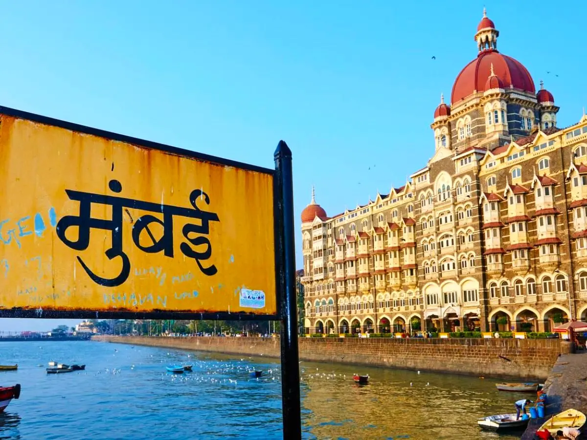
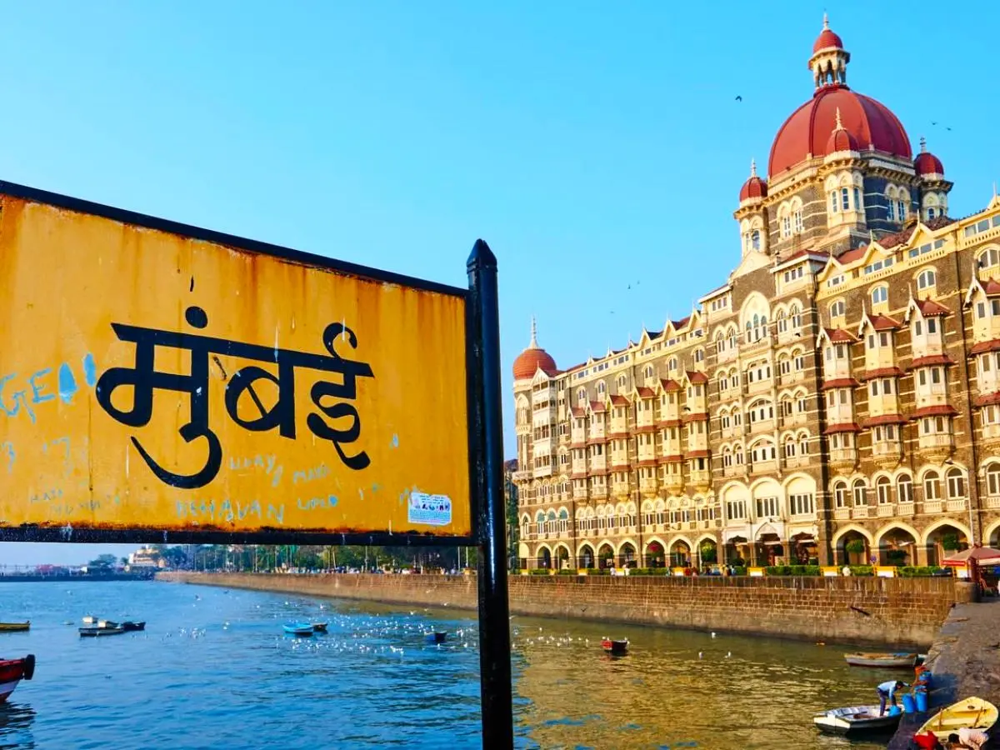

MUMBAI - The City That Never Sleeps, Always Explores üèôÔ∏è

 

Mumbai – The City Of Dreams
Mumbai, the bustling heart of Maharashtra, is full of places to explore. Start with the iconic Gateway of India and take a ferry to Elephanta Caves. Walk along Marine Drive and enjoy sunset views at Girgaon Chowpatty. Visit Siddhivinayak Temple and Haji Ali Dargah for spiritual peace. Art lovers must explore Kala Ghoda and the Chhatrapati Shivaji Maharaj Vastu Sangrahalaya. Don’t miss the glamour of Bandra’s street art, Carter Road, or shopping at Colaba Causeway. With history, food, beaches, and nightlife, Mumbai truly has something for everyone – always alive, always amazing!